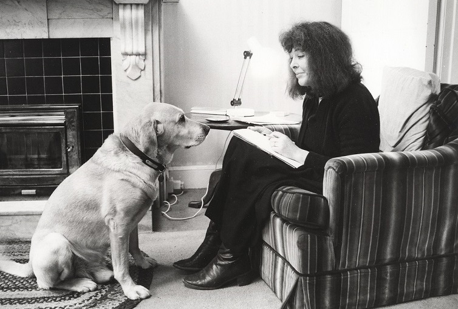

A British writer, of more than 40 books principally of fantasy novels for children and adults, as well as a small amount of non-fiction. Some of her better-known works include the Chrestomanci series and the novels Howl's Moving Castle and Dark Lord of Derkholm.
Here's a timeline of Diana Jones's life:
- 16 August 1934 - Diana Wynne Jones, was born in London, the daughter of Marjorie (née Jackson) and Richard Aneurin Jones, both of whom were teachers. Jones was the oldest of three sisters and often looked after her siblings—partly because of a complicated relationship with their parents, who were both teachers.
- 1939 - When the raids of World War II reached London, the five-year-old Diana and her two younger sisters were torn from their suburban life and sent to Pontarddulais in Wales to live with their grandparents. She didn't live long in Wales due to a family dispute, she thereafter moved several times, including periods in the Lake District, in York, and back in London.
- 1943 - Her family finally settled in Thaxted, Essex, where her parents worked running an educational conference centre. There, Jones and her two younger sisters Isobel (later Professor Isobel Armstrong, the literary critic) and Ursula (later an actress and a children's writer) spent a childhood left chiefly to their own devices. Despite struggling with dyslexia, Diana did well in school as a child and developed a keen interest in books.
- 1947 - Diana decided early that she wanted to become a writer, and when she was 13 years old she began writing stories for her sisters.
- 1953 - Diana Jones entered St. Anne’s College, Oxford, where she studied English (B.A., 1956) and attended lectures by renowned authors C.S. Lewis and J.R.R. Tolkien.
- 1956 - She married Medievalist John Burrow, with whom she had three sons and six grandchildren.
- 1957 - After a brief period in London, in the couple returned to Oxford.
- 1960s - Jones started writing "mostly to keep [her] sanity", when the youngest of her three children was about two years old and the family lived in a house owned by an Oxford college.
- 1970 - After a decade of rejections, was published Changeover, Diana Wynne Jones’s first novel. Though the majority of her books were written for children, Jones’s first published novel, Changeover, was intended for adults.
- 1973 - She joined forces with her lifelong literary agent, Laura Cecil, and in the four decades to follow, Diana Wynne Jones wrote prodigiously, sometimes completing three titles in a single year.
- 1976 - Diana with her family moving to Bristol
- 2009 - Diana Jones was diagnosed with lung cancer. She underwent surgery in July and reported to friends that the procedure had been successful.
- 26 March 2011 - She died on from the disease in Bristol England. She was surrounded by her husband, three sons, and five grandchildren as she was cremated at Canford Cemetery.
- 2012 - Her last book, Earwig and the Witch, published by Greenwillow Books.